Lektion 01
Einführung
Das Akzentzeichen > zeigt, dass eine Note hörbar stärker hervorgehoben werden soll. Spiele den Ton mit einem klareren, kräftigeren Anschlag als die benachbarten Töne.
Ein Akzent verändert weder die Länge der Note noch den gleichmäßigen Puls. Er verändert, wie deutlich der Ton hervortritt. Akzente können auf Hauptschlägen und auf Unterteilungen wie „&“, „e“ oder „a“ stehen.
Das lernst du.
Du erkennst das Akzentzeichen, findest seine Position im Takt und setzt den Akzent beim Klatschen oder Spielen gezielt um, ohne den Puls zu verändern.
Übe im Wechsel: Spiele oder klatsche zuerst alle Noten gleichmäßig. Wiederhole das Muster und hebe nur die mit „>“ markierten Noten deutlich hervor.
Das Akzentzeichen an verschiedenen Positionen
Die Beispiele zeigen Akzente auf Viertelschlägen, auf den „und“-Positionen der Achtel und auf einer Sechzehntelposition.
1 · Akzente auf Viertelschlägen
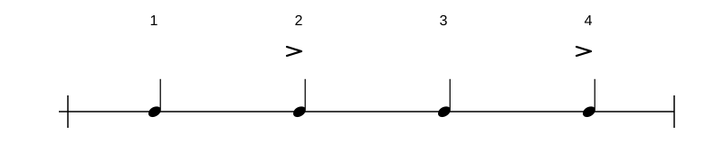
2 · Akzente auf Achtelpositionen
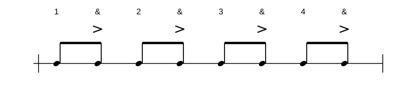
3 · Akzent auf einer Sechzehntelposition
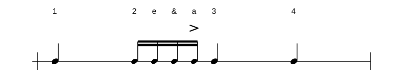
Lektion 02
Lesen
Nenne zuerst die Position jedes Akzentzeichens. Klatsche danach den Takt und hebe nur die markierten Noten mit einem klareren Anschlag hervor.
Leseübung 1
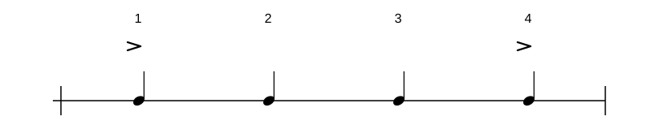
Leseübung 2
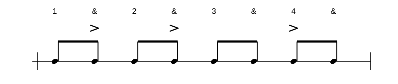
Leseübung 3
Lektion 03
Hören
Höre auf die Akzente und zähle den Viertelpuls mit. Bestimme, auf welchem Schlag oder welcher Unterteilung der stärkere Anschlag liegt.
Höraufgabe 1
Lösung anzeigen
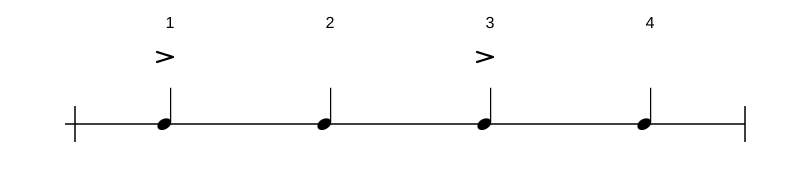
Höraufgabe 2
Lösung anzeigen
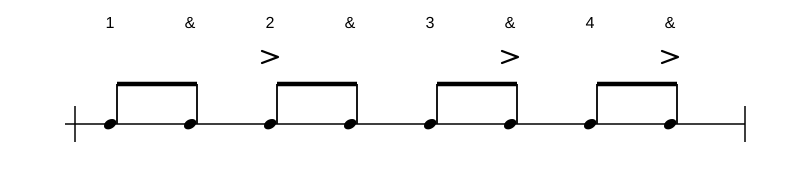
Höraufgabe 3
Lösung anzeigen
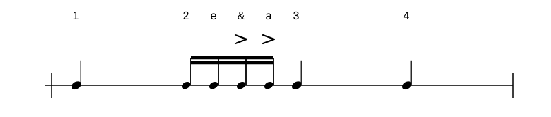
Lektion 04
Fehler finden
Vergleiche die notierte Position der Akzente mit der später ergänzten Aufnahme. Finde heraus, welche Akzente fehlen oder an einer anderen Zählposition gespielt werden.
Fehler finden 1
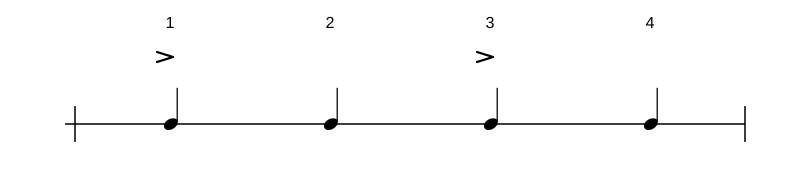
Lösungshilfe
Achte auf den Akzent auf Schlag 4.
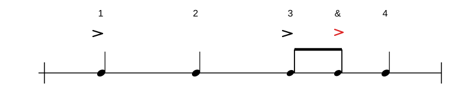
Fehler finden 2
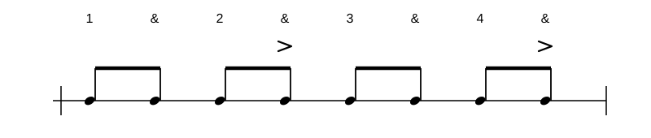
Lösungshilfe
In der Aufnahme liegen die Akzente auf 1-und sowie 3-und statt auf 2-und sowie 4-und.
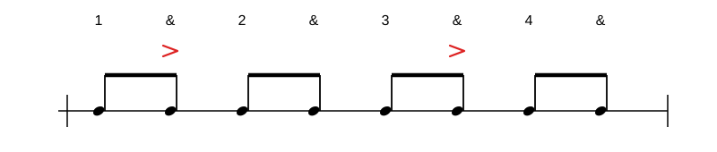
Fehler finden 3
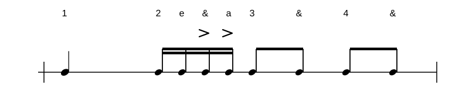
Lösungshilfe
In der Aufnahme liegen die Akzente auf Schlag 2 sowie auf 2e statt auf 2-und sowie 2a.
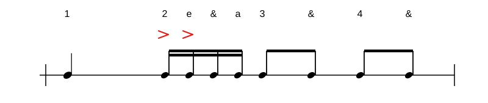
Lektion 05
Akzentzeichen selber setzen
Übung 1 · Zwei eigene Takte
Baue zwei Takte aus den bekannten Notenwerten und Pausen. Wähle im Takt eine Position und setze dort ein Zeichen. Du kannst Haltebögen zwischen direkt aufeinanderfolgende Noten setzen und einzelne Noten mit einem Akzent hervorheben. Jeder Takt umfasst höchstens vier Schläge.
So setzt du Akzente: Klicke im Notenbild auf eine Note und danach auf „Akzentzeichen“. Ein weiterer Klick auf das Zeichen entfernt den Akzent. Der Akzent verändert die Stärke des Anschlags, nicht die Notendauer.